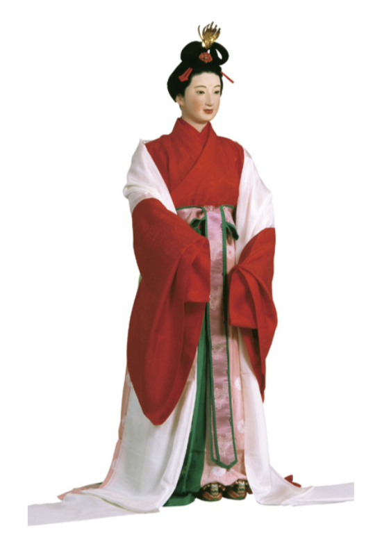
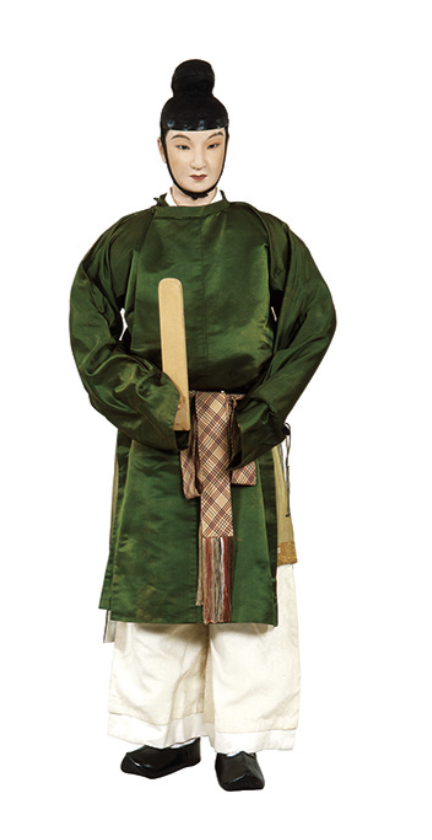

彌生時代的貫頭衣
彌生時代（約公元前300年-公元300年）
和服最初的型態為簡單的布料組合。男性穿著一片式包裹的「卷布衣」，女性則穿著如彭丘般、將布料對折開孔套入的「貫頭衣」。此時期服飾以天然素材為主，展現了與自然共生的原始美學。

奈良時代官方家族的代表服飾

奈良時代官宮女服飾

奈良時代官武官服飾
奈良時代（約公元710年-794年）
受盛唐文化影響，日本頒布「衣服令」確立階級體系。此時出現了明顯的雙重結構：統治階級仿效唐制身著華麗長袍（朝服），而基層勞動力則為了活動便利，穿著結構簡單的「小袖」作為內衣或日常服。這種「右衽（領口向右掩）」的規範，成為日後和服的標準構造。

平安時代-十二單
平安時代（約公元794年-1185年）
核心轉變在於「直線裁」技術的成熟。這種剪裁法不強調人體曲線，反而創造出寬大舒緩的廓形。貴族女性發展出由多層絲綢堆疊的「十二單」，透過「襲色目」展現穿著者的品味與對季節變化的敏銳度。

鎌倉時代武士家族代表服飾
鎌倉至室町時代（約公元1185年-1573年）
政治權力移轉至武士階級，服飾轉向簡約與實用。原本作為內衣的「小袖」逐漸外著化， 成為各階層通用的日常服，這也標誌著現代「著物（Kimono）」雛形的誕生。女性捨棄繁重的大袖， 改以綁帶固定腰間，為後世精巧的腰帶（Obi）美學打下基礎。

江戶時代武士家族代表服飾

小袖-分染纱绫地雪花棣棠花圖案
規範下的創新
幕府雖透過「奢侈禁止令」限制材質與色彩，卻激發了庶民在微小細節中追求精緻的動力。例如利用精細的織紋、染色技術（如友禪染）展現自我認同。此時，和服已不再只是衣物，而是穿著者的社會語言。

婚禮和服

參加畢業典禮和服
文化轉型
明治維新引進西洋化生產技術，雖然洋服逐漸普及，但也提升了和服的製作工藝。二戰後，洋服正式成為生活主流，和服轉而與人生中的重要里程碑掛鉤，如婚禮的「打掛」、畢業典禮的「袴」，成為象徵日本傳統與民族認同的文化符碼。